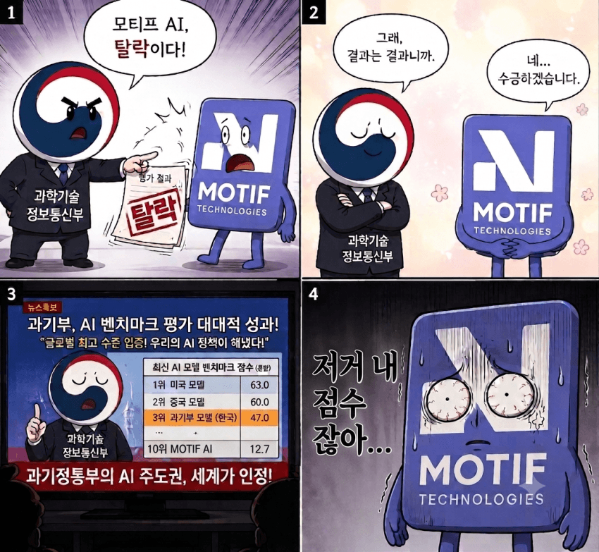

설명
1. 정부주도 ai사업에서 모티프 라는 국내 스타트업이 세계 3위급 성과를 냄
2. 정작 심사 결과는 모티프 탈락, 모티프 보다 훨씬 구린 대기업 ai는 합격
3. 그런대 과기부는 25일 있던 대통령 국무회의에서 지들이 탈락시킨 모티프의 성과를 선보이며 '한국 ai는 세계 3위수준입니다!' 라고 발표
4. 모티프 개빡치다!

설명
1. 정부주도 ai사업에서 모티프 라는 국내 스타트업이 세계 3위급 성과를 냄
2. 정작 심사 결과는 모티프 탈락, 모티프 보다 훨씬 구린 대기업 ai는 합격
3. 그런대 과기부는 25일 있던 대통령 국무회의에서 지들이 탈락시킨 모티프의 성과를 선보이며 '한국 ai는 세계 3위수준입니다!' 라고 발표
4. 모티프 개빡치다!
대한민국 조직문화가 실무와 행정을 구분짓는 문화라 이거 절대 못 고침
아 공대 나와서 국책 연구원 들어가도 좆뺑이만 치고
문과 행정직들 시다바리만 하는 문화 말이군
결국 국가 사업은 벤치마크만 보고 하는게 아니니까 그런거 아님?
토큰 값이나 인프라 규모, 안정성, 옵트 아웃 등등 종합적으로 따지면 당연히 달라질수도 있는거 같은데
초반에 기준을 잘못 세운게 아쉬울 순 있는데 나중에 또ㅠ기준 바꾸면 누구 밀어주려고 바꾸냐고 100퍼 소리 나엄
그런 기준으로 하면
엘지나 SKT는 모티프 업스테이지보다 사이즈가 거진 2배 이상의 모델로 하면서
성능은 모티피나 업스테이지에게 개털리고
엘지 경우엔 특히 토큰 낭비나 추론 과다가 심한데?
그리고 이걸 평가 하는 벤치중 가장 언급이 많고 유명한게 흔히 말하는 AA 아티피셜 애널리시스임
그런건 여기서 논쟁해서 의미가 없을 것 같은데
안정성, 대형 운용 가능성 같은 걸 애초에 점수화 할 수 있음?
그 국가 사업 보고서에서 탈락 사유 같은걸 보면 간단히 결론 나올 것 같은데
안정성은 이미 벤치에서 토큰은 그전 모델 보다 더 많이 잡아 먹고 추론을 더 길게 해도 성능이 못한게 나오는데
이런 모델이 안정성이 먼수로 좋게 나옴?
자동차로 치면 엔진 CC 키우면서 엔진 블록 구조개선이나 재질 압축 폭발 타이밍 제어 같은거 수정 제대로 안되서
토크랑 마력은 다른회사 CC작은 엔진보다 낮거나 딸리면서 기름은 더 많이 퍼먹는데
이런 엔진을 단차가 안정성이 좋겠냐?
그 안전성이 아니고 수백만명이 쓸 때 운용 가능하냐 회선이나 서버가 버티냐 이런거 말하는거임
국가 인프라 사업이면 흔하게 나오는 기준이니까 그런거 아닌가 생각한거
모델 사이즈가 두배 이상 차이가 나고 토큰을 많이 잡아 먹고 추론을 지나치게 하는데
그게 먼수로 회선이나 서버에서 이긴다는말임?
모티프는 과장 좀 하면 개인들이 인공지능 로봇 굴릴 정도 수준이 되고
엘지는 모델 사이즈가 2배이상 차이나서 굴릴려면 더큰 램가진 장비를 써야 하고
그렇게 해도 모티프 보다 토큰 성능이 안나오고 출력결과물도 구린데?
당장 모델 사이즈가 2배 차이가 나서 같은 회선이나 서버에서 모티프가 엘지보다 유리한데
거기서 성능조차 10점이상 차이가 나는 상황을 이해를 못하는거 보니 llm모델 자체를 이해를 못하 시는 분이라고 생각함
?? 맘대로 생각하셈
챗gpt한테 물어보니까 평가 기준이 확장성 범용성이고 전문가 평가에서 갈렸다는데 그게 쟁점이겠네 뭐
전문가 평가에서 갈린게 큰 문제라는거임
모티프가 세계 3위 성적을 받은 aaii 벤치는 세계에서 가장 공신력있는 ai 성능 지표로 쓰이는 9종 벤치마크의 평균점수 를 뜻함
그리고 이 벤치를 만든 전문가 만 하더라도 ai, 과학, 수학, 코딩, 금융, 경제, 철학, 화학, 의학 등 수많은 분야의 전문가 수백명이 만든거임
국제 표준으로 쓰이는 시험 vs 기준이 명시 되지 않은 국내 전문가 집단의 평가
이 둘중 국내 전문가의 평가를 더 높은 비중으로 판단한다는게 사람들이 납득 하지 못하는 이유임
게다가 aaii벤치안에 범용성을 테스트하는 벤치도 이미 있음 (구글, 오픈ai, 앤트로픽, 딥시크 같은 ai빅테크들도 신 모델 발표하면 이걸로 성능 발표함) 확장성은 토큰 효율이 가장 중요한대 그것도 모티프가 독파모 모델중 1위고
그거 다 감안해도 엘지랑 skt는 낙제점임
그리고 애초에 독파모 자체가 스타트업이든 대기업이든 성능만 겨뤄서 이긴쪽에 인프라를 몰아준다 라는 취지라 스타트업이라서 대형 운용이 불가능 하기 때문에 떨어트린다 라는건 어불성설임
성능이 비슷하다면 대기업손을 들어줄수도 있겠지만 성능, 효율 전부 스타트업 모델이 거의 배로 뛰어난대 떨어트린다? 말도 안됨
아 몰라 나라 자체가 짜증나 ㅜㅜ
빠르게 해먹는게 임자지 ㅋㅋㅋㅋㅋㅋㅋ
대기업 합병 엔딩날꺼같애...
???: 모티프야 너 굶어죽을래 다른데에 합병될래? 아 합병되면 너네 일은 똑같이 하고 그냥 월급만 받아가는거다 알지?
??? : 여성기업우대 평가 : -10점
기존 거래 실적 평가 : -20점
기업 규모 평가 : -10점
너 탈락
정부에서 저런거 한다고 하면 다 아는놈들 건너건너 갈라처먹는건 뭐 다 알잖아
저게 모티프가 코딩쪽으로 유리한데 정부는 범용성 따져서 낮게 받았다고 했었나? 범용성 추구하다 개박살난 제미나이랑 코딩 몰빵 클로드처럼 될 것 같네
그 범용성이라는게 산업 현장 같은데 얼마나 적용하나 인데
7월 말에 겨우 모델 완성 했는데
이걸 먼수로 산업에 적용함?
나머지 회사들은 자회사나 계열사 있고
업스테이지는 대기업은 아니지만 기존에 이미 모델 깍아 가면서 사업 한게 있고 다음 인수해서 적용한거지
정치5류 행정3류 기업2류 씹ㅋㅋㅋㅋ
요즘보면 왜 안썩은곳이 없냐 ㅋㅋ
정부새끼들 하는일이 그렇지 ㅋㅋㅋㅋ
병신 정부
어느 하나 억지로 밀어주려는 꼴이 너무 대놓고 보임 ㅅㅂ